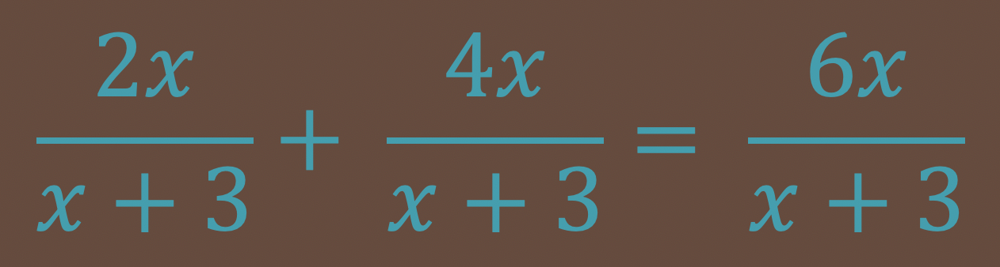
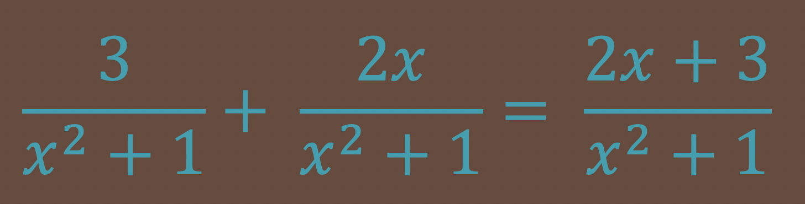
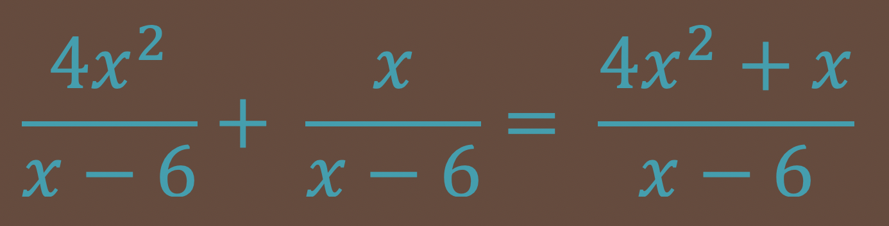
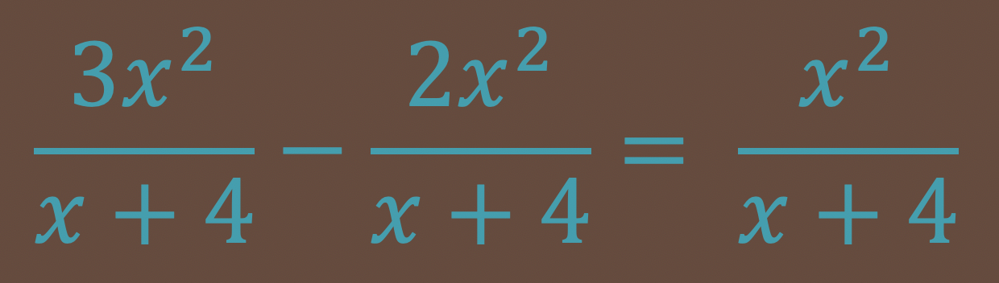
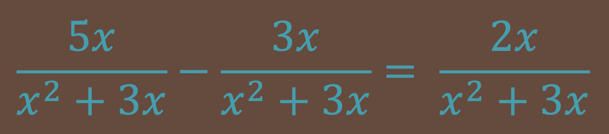
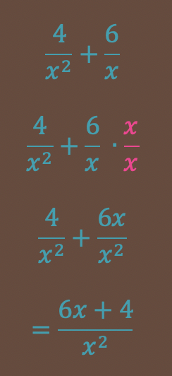
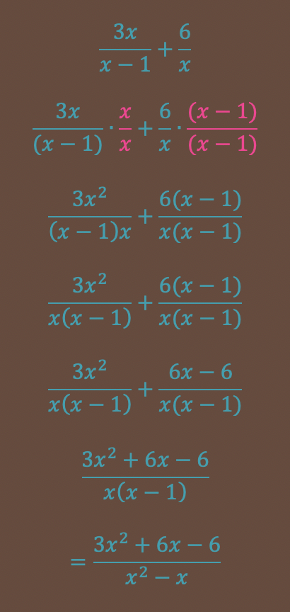
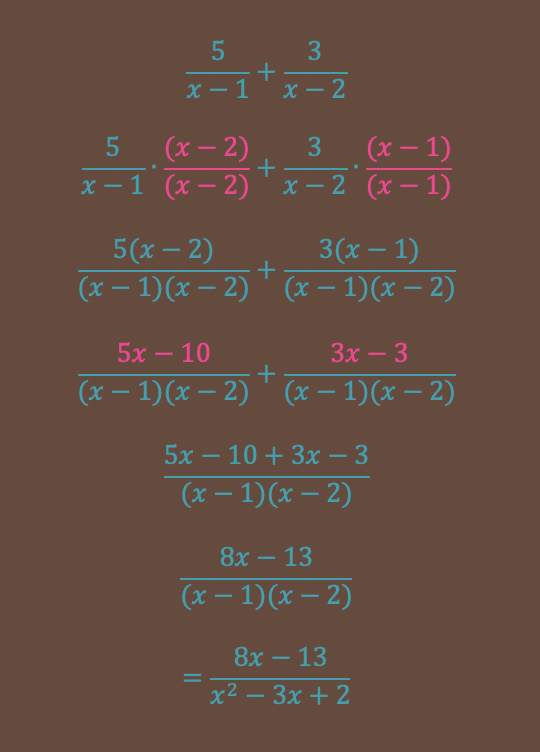
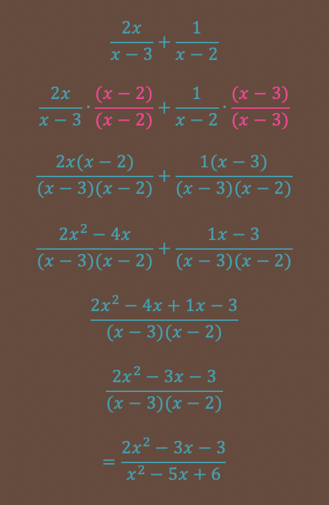

In this unit, we will learn how to add and subtract Rational Expressions. Remember Rational is a fancy word for a fraction. It can also be called a Ratio. Expressions mean we will be working with fractions that have polynomials in the numerator and denominator, rather then just numbers..
The rules for adding and subtracting fractions still apply to rational expressions. We must get a common denominator in order to add or subtract two fractions.
For example, to add 1/2 + 3/4, you must multiply the top and bottom of the first fraction by two to get a common denominator of four. Then you add the numerators together and keep the denominator the same. 2/4 + 3/4 = 5/4. To subtract two fractions you would just subtract the two numerators, all other steps remain the same: 5/3 - 1/3 = 4/3.
Example: Simplify the expression:

Add the two numerators and keep the denominator the same. 2x + 4x = 6x.
Example: Simplify the expression:

Add the two numerators and keep the denominator the same. 3 + 2x = 2x + 3. They are not like terms and cannot be combined.
Example: Simplify the expression:

Add the two numerators and keep the denominator the same. 4x2 + x are not like terms and cannot be combined.
Example: Simplify the expression:

Subtract the two numerators and keep the denominator the same. 3x2 - 2x2 = 1x2 = x2.
Example: Simplify the expression:

Subtract the two numerators and keep the denominator the same. 5x - 3x = 2x.
Example: Simplify:

In step one, the second fraction needs to be multiplied by x/x to get a common denominator of x2. Then add the two numerators and keep the denominator the same.
Example: Simplify:

Example: Simplify:

Example: Simplify:
